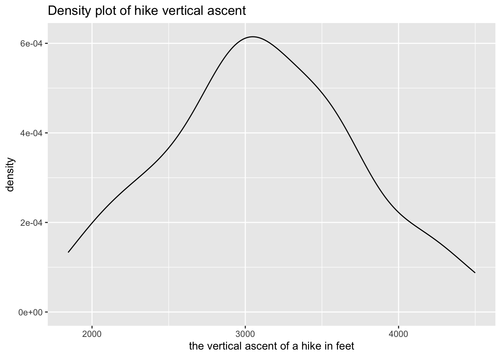
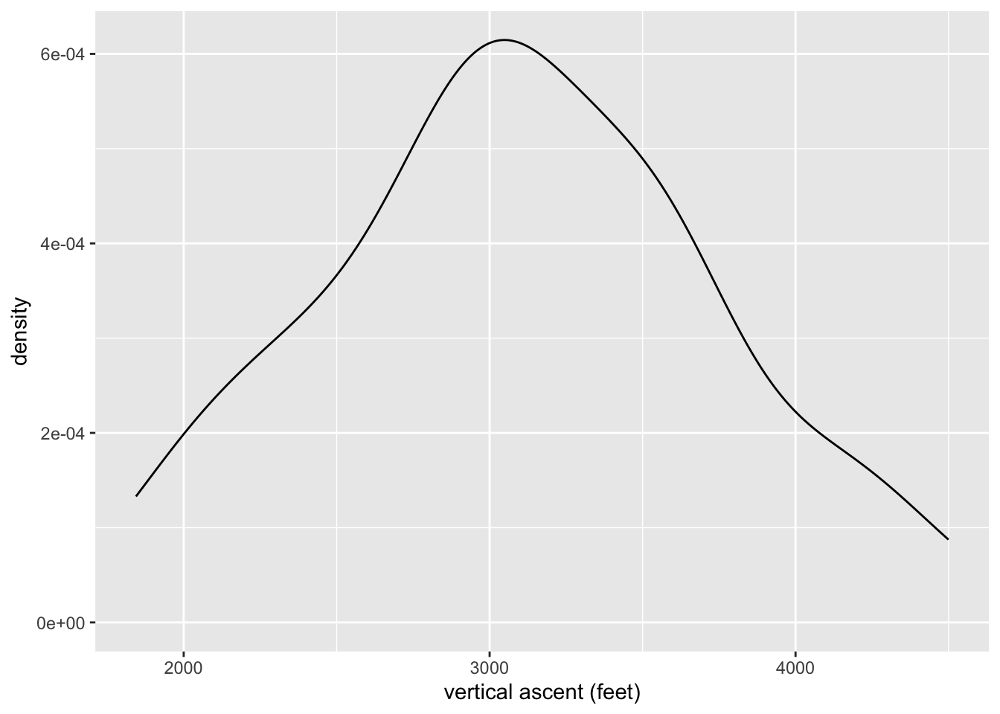

15 Mid-semester Review
Review the basics of wrangling and visualization
15.1 Warm-up

Thus far, we’ve learned how to:
- use
ggplot()to construct data visualizations - do some wrangling:
arrange()our data in a meaningful order- subset the data to only
filter()the rows andselect()the columns of interest mutate()existing variables and define new variablessummarize()various aspects of a variable, both overall and by group (group_by())
- reshape our data to fit the task at hand (
pivot_longer(),pivot_wider()) join()different datasets into one
Let’s review some basics, emphasizing some themes in Homework 3 feedback!
Along the way, pay special attention to formatting your code: code is communication.
EXAMPLE 1: Make a plot
Recall our data on hiking the “high peaks” in the Adirondack Mountains of northern New York state. This includes data on the hike’s highest elevation (feet), vertical ascent (feet), length (miles), time in hours that it takes to complete, and difficulty rating.
Construct a plot that allows us to examine how vertical ascent varies from hike to hike.
EXAMPLE 2: What’s wrong?
Critique the following interpretation of the above plot:
“The typical ascent is around 3000 feet.”
We dont know if it is in feet.
EXAMPLE 3: Captions, axis labels, and titles
Critique the use of the axis labels, caption, and title here. Then make a better version.
ggplot(hikes, aes(x = ascent)) +
geom_density() +
labs(x = "the vertical ascent of a hike in feet",
title = "Density plot of hike vertical ascent")
EXAMPLE 4: Wrangling practice – one verb
[1] 46 max(elevation)
1 5344 rating n
1 difficult 8
2 easy 11
3 moderate 27 peak elevation difficulty ascent length time rating
1 Mt. Marcy 5344 5 3166 14.8 10 moderate
2 Algonquin Peak 5114 5 2936 9.6 9 moderate
EXAMPLE 5: Wrangling practice – multiple verbs
# What's the average hike length for each rating category?
hikes |>
group_by(rating) |>
summarize(mean(length))# A tibble: 3 × 2
rating `mean(length)`
<chr> <dbl>
1 difficult 17.0
2 easy 9.05
3 moderate 12.7 # What's the average length of *only* the easy hikes
hikes |>
filter(rating == "easy") |>
summarize(mean(length)) mean(length)
1 9.045455 peak elevation difficulty ascent length time rating
1 Mt. Emmons 4040 7 3490 18.0 18 difficult
2 Seward Mtn. 4361 7 3490 16.0 17 difficult
3 Mt. Donaldson 4140 7 3490 17.0 17 difficult
4 Mt. Skylight 4926 7 4265 17.9 15 difficult
5 Gray Peak 4840 7 4178 16.0 14 difficult
6 Mt. Redfield 4606 7 3225 17.5 14 difficult# What 6 hikes take the longest time per mile?
hikes |>
mutate(time_per_mile = time / length) |>
arrange(desc(time_per_mile)) |>
head() peak elevation difficulty ascent length time rating time_per_mile
1 Giant Mtn. 4627 4 3050 6.0 7.5 easy 1.250000
2 Nye Mtn. 3895 6 1844 7.5 8.5 moderate 1.133333
3 Street Mtn. 4166 6 2115 8.8 9.5 moderate 1.079545
4 Seward Mtn. 4361 7 3490 16.0 17.0 difficult 1.062500
5 South Dix 4060 6 3050 11.5 12.0 moderate 1.043478
6 Cascade Mtn. 4098 2 1940 4.8 5.0 easy 1.04166715.2 Solutions
Click for Solutions
EXAMPLE 1: Make a plot
EXAMPLE 2: What’s wrong?
That interpretation doesn’t say anything about the variability in ascent or other important features.
EXAMPLE 3: Captions, axis labels, and titles
The axis label is too long, and the caption and title are redundant.

EXAMPLE 4: Wrangling practice – one verb
[1] 46 max(elevation)
1 5344 rating n
1 difficult 8
2 easy 11
3 moderate 27 peak elevation difficulty ascent length time rating
1 Mt. Marcy 5344 5 3166 14.8 10 moderate
2 Algonquin Peak 5114 5 2936 9.6 9 moderate
EXAMPLE 5: Wrangling practice – multiple verbs
# What's the average hike length for each rating category?
hikes |>
group_by(rating) |>
summarize(mean(length))# A tibble: 3 × 2
rating `mean(length)`
<chr> <dbl>
1 difficult 17.0
2 easy 9.05
3 moderate 12.7 # What's the average length of *only* the easy hikes
hikes |>
filter(rating == "easy") |>
summarize(mean(length)) mean(length)
1 9.045455 peak elevation difficulty ascent length time rating
1 Mt. Emmons 4040 7 3490 18.0 18 difficult
2 Seward Mtn. 4361 7 3490 16.0 17 difficult
3 Mt. Donaldson 4140 7 3490 17.0 17 difficult
4 Mt. Skylight 4926 7 4265 17.9 15 difficult
5 Gray Peak 4840 7 4178 16.0 14 difficult
6 Mt. Redfield 4606 7 3225 17.5 14 difficult# What 6 hikes take the longest time per mile?
hikes |>
mutate(time_per_mile = time / length) |>
arrange(desc(time_per_mile)) |>
head() peak elevation difficulty ascent length time rating time_per_mile
1 Giant Mtn. 4627 4 3050 6.0 7.5 easy 1.250000
2 Nye Mtn. 3895 6 1844 7.5 8.5 moderate 1.133333
3 Street Mtn. 4166 6 2115 8.8 9.5 moderate 1.079545
4 Seward Mtn. 4361 7 3490 16.0 17.0 difficult 1.062500
5 South Dix 4060 6 3050 11.5 12.0 moderate 1.043478
6 Cascade Mtn. 4098 2 1940 4.8 5.0 easy 1.041667